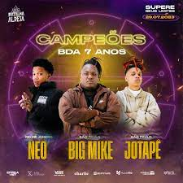
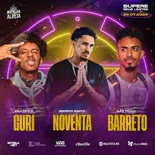

UM POUCO SOBRE O NOSSO SITE...
A Roda de Rap é um site criado para publicar sobre a cultura do Hip Hop no Brasil. Um site de opinião pública, com notícias, curiosidades, manchetes sobre o gênero musical RAP, MC's e toda a cultura de Hip Hop que é onde muitos jovens investem sua carreira.
ASSUNTO DE HOJE: BATALHA DE RIMA
O que são as batalhas de rima?
As batalhas de rima são um estilo de arte livre, uma competição em que dois ou mais rappers competem entre si usando letras improvisadas: o chamado freestyle. O objetivo dos competidores é dissuadir o oponente através de rimas bem elaboradas. Nas batalhas, a presença do público ao vivo é de extrema importância, pois, o MC não deve só utilizar de suas habilidades musicais para derrotar seu oponente, mas também, para convencer o público de quê ele é um bom rapper e que é merecedor de ganhar a batalha.
Para nos aprofundarmoss um pouco mais nesse mundo de Hip Hop e batalhas de rima, escolhemos uma importante batalha no RAP hoje em dia que é a Batalha da Aldeia (BDA).
BATALHA DA ALDEIA- O QUE É E COMO SURGIU?
Fundada por Bruno Souza (Bob13) e Giovanni Zanardi (GZ), a Batalha da Aldeia (BDA) é atualmente a maior Batalha de rimas do Brasil, localizada na Praça dos Estudantes, em Barueri, São Paulo. O evento nasceu em 2016, pela iniciativa de dois amigos, que, na época, um deles passava por um quadro de depressão, e encontrou na batalha uma forma de vencer a doença, reconquistando sua vida. No começo, os encontros reuniam poucas pessoas que se juntavam para batalhar, os MCs eram acompanhados por uma pequena caixa de som que trazia o beat, e dali saiam rimas que deixavam todos em êxtase. As batalhas aconteciam inicialmente nas terças-feiras, mas por pedido da prefeitura, o dia oficial foi mudado para segunda-feira, o que só aumentou o público. Esse foi apenas o começo do que vemos hoje na BDA, e cada vez, a visibilidade das batalhas de rima crescem mais, tendo não só a BDA, mas muitas outras organizações de batalha de rima (por exemplo a Batalha da Norte, Coliseu).
As batalhas de rima são competições que atraem muitas pessoas para assistirem seus MC's favoritos batalharem entre si pelo recconhecimento. A BDA é marcada por um evento anual, o aniversário da Batalha da Aldeia. O aniversário da BDA deste ano ocorreu no dia 29 de julho, sendo o sétimo aniversário. O evento aconteceu no Clube Juentus, no Mooca, em São Paulo.
A batalha era em trio, e muitos MC's batalharam, dando o máximo de si até onde puderam, se esforçando ao máximo para continuarem dentro do campeonato a cada fase, mostrando total potencial em seus freestyles. O evento encheu todo o clube com pessoas do Brasil inteiro, e, finalizando a noite com o show do MC Orochi.
Por mais que todos os participantes tenham se esforçado muito, apenas um trio saiu campeão, levando 30.000 para a casa, foi o trio de monstros, Neo, Jotapê e Big Mike (atual campeão nacional).
Esse trio fez por merecer, rimaram insanamente, mostrando serem dignos do prêmio. Mas para conquitarem isso, tiveram de enfrentar na final utro trio insano, o trio de Barreto, Guri e Noventa.
Embora apenas um trio tenha sido campeão,todos os outros mostraram seu talento e provaram que são mestres no que fazem. Esse foisó o exemplo de um aniversário, mas no passados tiveram muitos outros que entregaram muito! Fora a BDA há também muitos outros campeonatos, como o Estadual e o Nacional, o qual o campeão Big Mike tambem possuí.
Isso foi só um pouco do que a cultura do Hip Hop tem a oferecer, mas, sem dúvidas a Batalha da Aldeita merece o lugar que está e a refêrencia que é. Sendo a maior batalha do Brasil e a terceira maior do mundo, é um movimento que não para de crescer, e conquista cada vez mais público e mais visibilidade, trazendo a cada geração talentos incríveis e únicos.